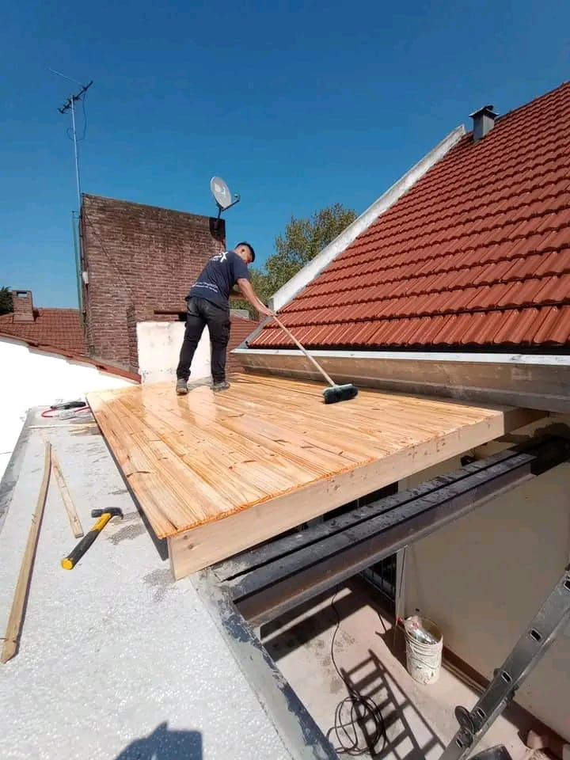
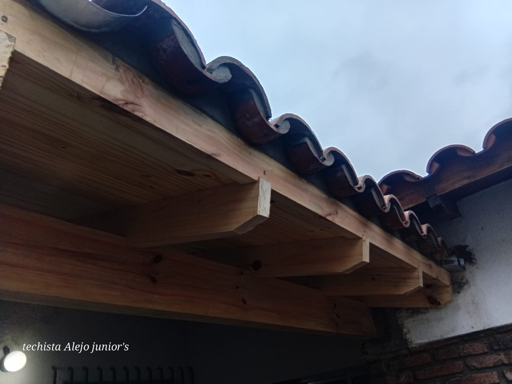
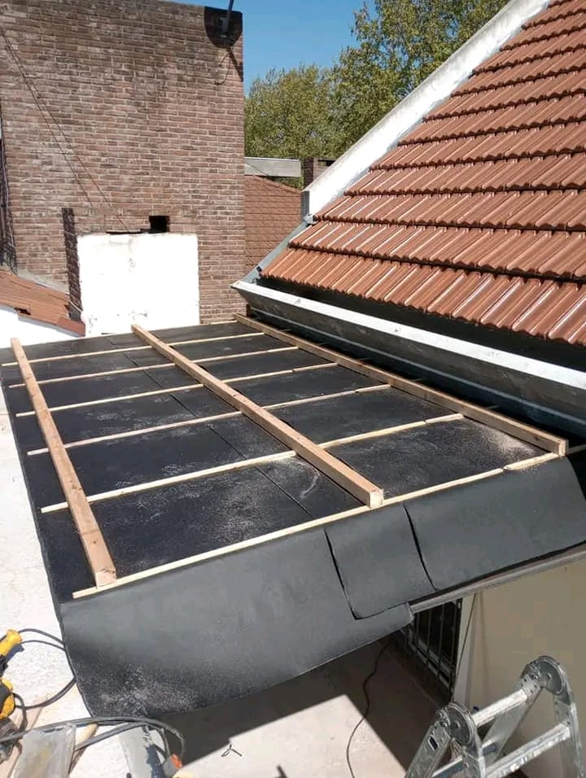
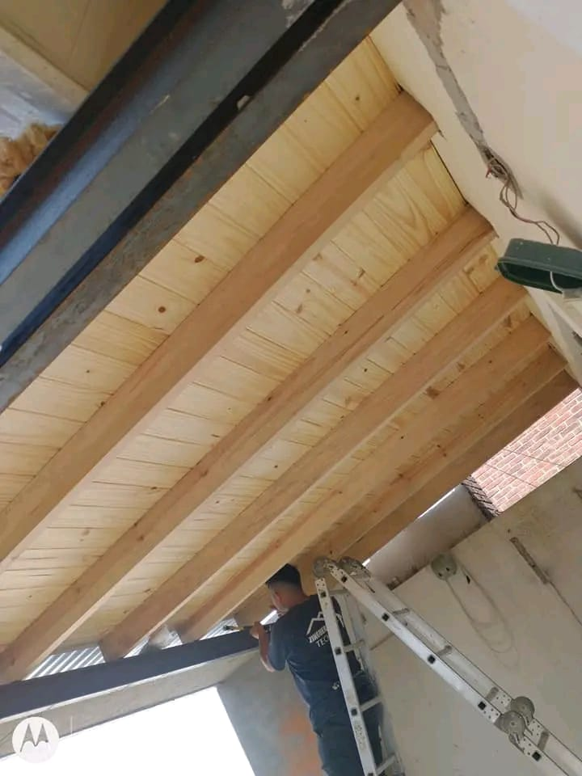
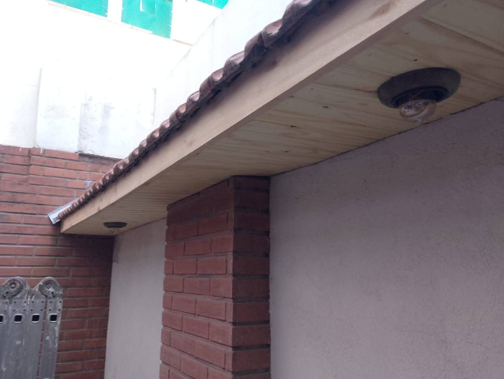
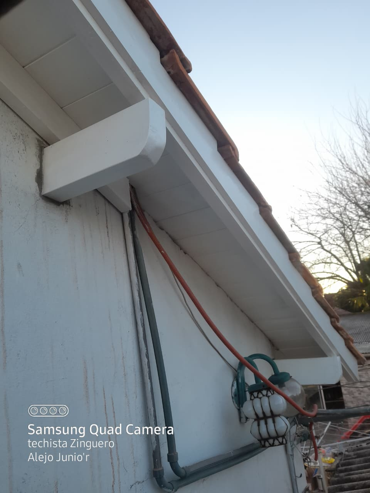

Techos nuevos y reparaciones
Construcción de techos desde cero y arreglos generales. Trabajamos con tejas, losas, chapas y pizarras.
Consultar por WhatsAppTECHOS · ZINGUERÍA · MADERA
Techos nuevos, reparaciones y zinguería en CABA y alrededores. Presupuestos sin cargo y trabajos con garantía.
Un oficio que se ve en los detalles.
Las fotos de esta web son de nuestros trabajos.

01 / EN OBRA01 — QUÉ HACEMOS
Trabajos con garantía y presupuestos sin cargo. Contanos qué necesitás y conversemos sobre tu techo.
Construcción de techos desde cero y arreglos generales. Trabajamos con tejas, losas, chapas y pizarras.
Consultar por WhatsAppCanaletas, ventilaciones y caños de bajada, estándar o a medida. También realizamos soldadura en general.
Consultar por WhatsAppDetección y reparación de filtraciones y goteras. Consultanos por atención ante emergencias.
Consultar por WhatsAppRecambio de cubiertas: cambio de tejas por chapas o de chapas por tejas.
Consultar por WhatsAppArmado y reparación de estructuras de madera y metal.
Consultar por WhatsAppMadera a la vista, revestimientos y terminaciones en aleros.
Consultar por WhatsApp02 — NUESTROS TRABAJOS
Una selección de nuestras obras: la madera, las tejas y las terminaciones, de cerca. Tocá una foto para ampliarla.

TEJAS + MADERATecho de tejas y madera↗︎
EN PROCESOCubierta y zinguería en obra↗︎
DESDE ADENTRORevestimiento interior de madera↗︎
TERMINACIONESAlero de madera terminado↗︎
OTRA TERMINACIÓNAlero con terminación blanca↗︎Fotografías de trabajos compartidas por el negocio. Sin imágenes de catálogo.
03 — EMPECEMOS POR HABLAR
No necesitás saber el nombre de cada pieza.
Contanos qué pasa con tu techo o qué tenés en mente.
Mandanos tu consulta y la zona donde sería el trabajo.
Si tenés fotos, compartilas por WhatsApp para darnos contexto.
Conversamos sobre lo que necesitás y los próximos pasos para tu caso.
04 — CONTACTO DIRECTO
Escribinos y contanos qué necesitás.
Tu consulta llega directamente al negocio.
Preparamos tu consulta para que la envíes por WhatsApp.
El formulario necesita JavaScript. También podés usar el enlace directo a WhatsApp.